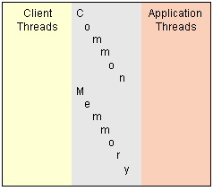

This section is for developers. This section explains the internal
structure of Tymeac. The package for all these classes is com.tymeac.base.
Use this section together with the testing section.
The terminology may be confusing at times. Separating a request into its
components and parallel processing each component has been going on for many
decades. It is the fastest, most efficient way to process huge numbers of
transactions. Large enterprises seldom share propriety code with others; hence
open source Tymeac.
The first Java version was written in 1998 for JDK1.1
using the IBM®
CICS® version
of Tymeac as a template. The original CICS®
version was written in
- System/370 assembler,
- then COBOL,
- then C.
It was written to run
on
- Mainframes, (MVS and VSE,)
- RISC (AIX) and
- finally x86 (OS/2, Win32 and Linux).
That should be enough to confuse anyone.
The words table and array are synonymous, words reference and
pointer are synonymous for Tymeac documentation. Try as we may, we can't
stop using the word pointer. At least it's better than 'address of'.
A Queue Area is a framework. It isn't a queue alone, but the
elements needed to support the queue. For Tymeac it is the pointer to the
wait lists, the pointers to the threads and other classes necessary for
controlling the queue. Area is the name it started out being (from ...control area.) When someone comes
up with a better name, then we'll change it.
You'll find structures called headers and details. These come from the old
structure of having a fixed memory header and a variable number of detail items
following. You could map it in memory as follows:
| header | detail | detail | detail |
When converting to object oriented, we kept the naming structure. But it is
changing over time.
Tymeac uses the concept of shared memory or common memory. There is a single structure
(Class TyBase) containing pointers to every Tymeac management Class
as well as Tymeac system wide variables.
Every Tymeac management Class has a field pointer to TyBase whether it uses
it or not. Therefore, every Tymeac management Class can find every other Tymeac
management Class.
Every
thread, the client request running on the server (end-point) and the application thread as part of a
Tymeac Queue, has a pointer to the TyBase Class. Therefore, every client
end-point thread can
find every server thread and every Tymeac management Class.
Every server thread can find every Tymeac management Class. There is no need
for the server threads to find client end-point threads.

The pointer structure is as follows:
TyBase pointers
--> TymeacImpl
This is the real implementation logic
for Tymeac.
All the code to do all the client
calls is here.
--> AreaList
Array of AreaBase elements.
--> AreaBase
Information about each Queue,
pointer to the Wait Lists and
the array of AreaDetails Anchors.
--> AreaWaitListsAnchor
Methods for controlling the
individual Wait Lists
--> AreaWaitLists
Linked lists of waiting
requests.
--> AreaThreadsAnchor
Methods for controlling the
individual threads.
--> AreaThreadMgmt
Thread information.
One for each
thread
in the Queue.
--> FuncHeader
Search logic for finding a Tymeac
Function and
pointer to array of FuncDetail
elements.
--> FuncDetail
Function information.
--> RequestHeader
Logic for enumerating the details and
pointer to array of RequestDetail
elements.
--> RequestDetail
Information about each async and sync
request.
--> StallHeader
Logic for enumerating the details and
pointer to array of StallDetail
elements.
--> StallDetail
Information about each stalled async
request.
--> GenTable
Number generation.
Each request gets a new sequence
number (AtomicInt)
--> Monitor
The Monitor
thread.
--> TyLogTable
Really just the anchor point for the
writer thread.
Pointer to the writer thread.
--> TyLogThread
The log writing thread.
--> TyStatsTable
Really just the anchor point for the
writer thread.
Pointer to the writer thread.
--> TyStatsThread
The statistics writing thread.
--> TyNotifyTable
The front end for calling the Tymeac
Notify Function.
--> TymeacInfo
A singleton containing information
about the currently executing server.
--> Object
The user singleton (TymeacUserSingleton)
cast to an object.
Just to insure it doesn't get garbage
collected.
Users get access to this class by
using getInstance().
Other pointers and objects contained in the TyBase Class are for the server
use only. Their function is obvious from their names and comments. (E.G. String
array for user exits, start up time, etc.)
Tymeac manages Queues, therefore the Tymeac Queue is at the heart of the
system.
The Tymeac Queue Structure:
| AreaBase |
Contains
Queue-wide variables
the reflect.method
pointer to the Processing Application Class
the pointer to the waitlist anchor
the pointer to the queue threads anchor |
| AreaList |
This is just the list of all Tymeac
Queues.
Built at start-up by adding one entry at a time, it never changes. |
|
AreaThreadsAnchor |
This is the anchor point for the Queue's
thread Classes.
This anchor contains the methods for accessing
the threads
in the pool. The pool is simply an ArrayList.
|
| AreaThreadMgmt |
This is the management class for a
Queue's thread.
This class contains the methods for accessing and manipulating
the individual thread. |
| AreaBasicThread |
Queue Thread base logic (Abstract Class)
There is also an
uncaught exception handler for the threads:
AreaThreadExceptionHandler |
| AreaQueueThread |
Queue Thread to process normal queues. |
| AreaAgentThread |
Queue Thread to process the Output Agent
Queue. |
|
AreaWaitListsAnchor |
This is the anchor point for the Queue's
Wait Lists
This anchor contains the methods for accessing the Wait Lists
and the Array of Wait Lists.
The array is simply an ArrayList |
| AreaWaitList |
A single Queue Wait List.
Each object contains information about each Wait List and
the actual list itself (ConcurrentLinkedQueue.)
|
TymeacImpl
TymeacImpl is the concrete implementation of the TymeacInterface. The interface
defines all the [remote] method calls clients can make to the server. TymeacImpl
is not abstract nor do other classes extend it. However, no client classes call
it directly. This class is front-ended by other classes that extend API classes
when necessary (PortableRemoteObject, Activatable, etc.)
The callable classes keep a reference to TymeacImpl, such as:
public
final
class
TymeacPOAImpl
extends
PortableRemoteObject
implements TymeacInterface {
// real impl class
private
TymeacImpl impl;
and simply call it
indirectly:
public
Object[] asyncRequest (TymeacParm
Req )
throws
RemoteException {
// off to real impl
return
impl.asyncRequest(Req);
}
When adding any future callable classes all one needs to do is
define the API from which the class should extend and add code as above. See the
current classes for examples: TymeacActivationImpl, TymeacIIOPImpl,
TymeacPOAImpl, TymeacStandardImpl.
The Jini front-ends extend the aforementioned
classes.
AreaBase
AreaBase is the Queue Area. This contains all the common variables for the
Queue. i.e. counters, threshold values, class loader fields, etc.
Pointers to the Anchors: Wait Lists and Threads
AreaThreadsAnchor
The methods for controlling thread selection and the common routines for
dealing with the threads as a group.
AreaThreadMgmt
AreaThreadMgmt is the thread class. There is one object for each thread in the
queue.
Most fields are Atomic or Volatile.
There is an AtomicReference pointer to either the AreaQueThread (for normal
Queues) or AreaAgentThread (for Output Agent Queues.) This field has a dual
purpose.
- Naturally it is a pointer to the thread if a thread is alive.
- It is also an indicator of whether the thread was disabled and an
administrator wants to ignore any further use of this thread
More on this.
AreaBasicThread
This is the abstract basic Queue Thread Class. It contains common fields
and methods for the AreaAgentThread and
AreaQueThread.
AreaThreadExceptionHandler
This is the uncaught exception handler for the threads.
AreaWaitListsAnchor
The methods for controlling access to individual Wait Lists.
AreaWaitList
WaitLists are priority lists for holding requests. ConcurrentLinkedQueue<RequestDetail>.
There is a fixed part that contains counters, etc. and a ConcurrentLinkedQueue.
There are as many wait lists as defined for the queue. If there are ten wait
lists, then there are ten wait list objects.
FuncHeader
FuncHeader contains the search logic for finding a Tymeac Function. This may
be using a binary or serial search.
There is a pointer to the array of FuncDetail
elements.
FuncDetail
FuncDetail is the class for each Tymeac Function.
There is a name, output agent name, list of queues.
The usage count is Atomic.
RequestHeader
RequestHeader is an anchor point for the details.
This class contains methods for searching the details (ConcurrentLinkedQueue.)
RequestDetail
RequestDetail is an anchor point for the details.
Go to the source for the details.
StallHeader
StallHeader is an anchor point for the details.
This class contains methods for searching the details (ConcurrentLinkedQueue.)
When an asynchronous request stalls, an entry is put here.
StallDetail
StallDetail contains the information about when an asynchronous request
stalled and a reference to the request detail that is the request.
The entry stays here until either the original asynchronous request finishes
or is purged by the user, or, the entry is purged by the user in the
Stall Array Display.
GenTable
GenTable contains the sequence numbers (AtomicLong) for asynchronous and synchronous
requests.
Monitor
There are no public methods in the monitor, yet.
See here for a discussion of the purpose of the
Monitor.
MonitorExceptionHandler
This is the uncaught exception handler. Since Tymeac cannot
run without a Monitor in a production state, the code shuts down the server.
TyLogTable
TyLogTable is the anchor point for the message writer thread.
TyLogThread
TyLogThread is the message writer thread for logging.
TyStatsTable
TyStatsTable is the anchor point for the message writer thread.
TyStatsThread
TyStatsThread is the message writer thread for writing statistics.
TyNotifyTable
TyNotifyTable is the anchor point for the notification Tymeac Function.
See here for further information.
TymeacInfo
TymeacInfo is a singleton that supplies information about the currently
executing server. See here for more information.
TymeacUserSingleton
TymeacUserSingleton is user dependent. There is a entry here so the garbage
collector does not eat it. See here for more information.
Starup is the start up Class for all versions of Tymeac.
parseArgs(String[]) is called by every start up
This method parses the arguments passed on the command line or script. There are
no other overridden methods.
doRest() is called by every start up. It finishes building the environment.
There are several other classes starting with "Startup" Each does what the class
name says.
A typical start up is as follows:
A main() instantiates a Tymeac Server (RMIServer, IIOPServer, etc.) The constructor instantiates TyBase()
Calls the Startup() which instantiates Startup(). Calls
parseArgs() and doRest(). This loads all the Queues, Functions, starts the
Monitor, executes the start up Classes and Functions, etc.
Exports the remote object, when necessary and rebinds the server, when
necessary.
Servers extend from Class BaseServer. There are different servers because
there are different environments in which they run (internal, IIOP, POA, Jini,
etc.)
Queue Threads extend from Class AreaBaseThread. There are two worker threads:
The AreaAgentThread handles the output agent Queues. The AreaQueThread handles the
normal Queues.
Other threads are named here.
The String messages and text used throughout the code are in Class TyMsg.
The Strings for dealing with the configuration file is in Class TyCfgStrings.
This makes porting to languages other than US English easier.